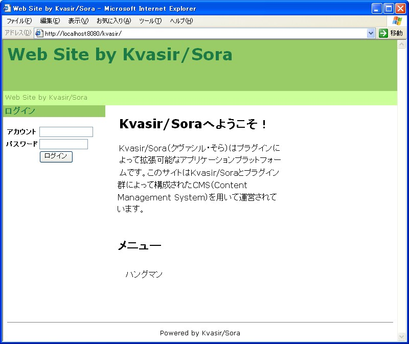

ここではKvasir/SoraをWindowsXPにインストールする手順を説明します。他のOSの場合も大体同様の手順でインストールを行なうことができると思います。
Kvasir/Soraを利用するには次のものが必要です。
現在、Sun JDK1.4.2_08とApache Tomcat5.0.30で動作を確認しています。DBMSはMySQL、PostgreSQLでも動作が可能なように実装されていますが、現在のところDBMSを切り替える機能が未実装のためHSQLDBが使用されます。またHSQLDB以外のDBMSでの動作確認は行なっていません。
まずKvasir/Soraのバイナリアーカイブkvasir-generic-3.0.0-EA1をダウンロードして下さい。バイナリアーカイブを解凍するとkvasir.warというWARファイルができますので、これをサーブレットコンテナに配備します。例えばTomcatであれば、CATALINA_HOME/webappsにkvasir.warをコピーします。（CATALINA_HOMEはTomcatのインストールディレクトリとします。）
これでインストールは完了です。サーブレットコンテナを起動してトップページにアクセスすると、以下のようなWebサイトのトップページが表示されます。

表示されない場合はkvasir.warの配備に失敗しています。設定を確認して下さい。
あとはサイト管理ツールを使ってWebサイトにコンテンツを配置したり外観をカスタマイズしたり機能を追加したりしてオリジナルのWebサイトを構築して下さい。Webサイトのカスタマイズ方法については、まず始めてみようを読んでみて下さい。
Enjoy Kvasir/Sora!